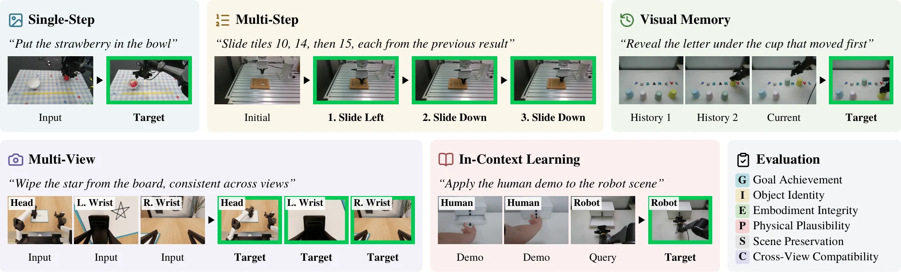

Robot manipulation systems increasingly use image editing models to turn a language instruction into a visual goal. A useful goal image has to show the requested change and keep everything else in the scene where it was.
RoboEdit is a benchmark for visual goal editing in embodied manipulation. Given a current observation, a manipulation instruction, and optional context such as historical observations, additional views, or demonstrations, the model edits the current observation into the goal state the instruction specifies while preserving unrelated scene content.

Five settings
The cases come from privately collected real robot, human, and simulated episodes, covering 10 robot platforms and 13 operation categories. The settings differ in what context the model receives with the current observation.
Single-Step
Edit one observation to show the result of one instruction.
Multi-Step
Continue from the model's own earlier outputs through a chain of instructions.
Visual Memory
Use earlier observations to recover facts the current view no longer shows.
Multi-View
Edit several camera views so that they agree on one completed goal.
In-Context Learning
Infer the operation from a demonstration pair and apply it to a new scene.
Goal first.
Then everything else.
A judge model rates every output against human-verified, case-specific criteria on a 1 to 5 scale, three times per output. The overall score multiplies goal achievement by the fidelity dimensions, so a faithful image that misses the goal scores low.
Goal achievement
Is the requested goal state visibly reached?
Object identity
Do the objects keep their identity, count, and attributes?
Embodiment integrity
Do the robot or hand and its grippers stay structurally intact?
Physical plausibility
Are support, contact, and containment physically possible?
Scene preservation
Does the rest of the scene and the camera view stay unchanged?
Cross-view compatibility
Do the edited views of a Multi-View case depict one consistent goal?
Fidelity is not the goal
We evaluate 22 image editing models and 9 video generation models. Seedream-5.0-Pro and GPT-Image-2.5-Sunburst reach the highest overall scores, 49.5 and 47.8 out of 100. No model reaches a goal achievement score of 50 in Visual Memory or In-Context Learning.
A goal image can look right and still ask the robot for the wrong thing.
The table lists the overall score of every model that covers all five settings, as the mean over settings and per setting.
| # | Model | Type | Average | Single | Multi | Memory | View | ICL |
|---|---|---|---|---|---|---|---|---|
| 1 | Seedream-5.0-Pro | Closed | 49.51 | 81.1 | 57.0 | 37.8 | 36.3 | 35.4 |
| 2 | GPT-Image-2.5-Sunburst | Closed | 47.78 | 78.6 | 59.3 | 32.6 | 38.7 | 29.7 |
| 3 | GPT-Image-2.5-Flare | Closed | 39.96 | 75.5 | 53.9 | 24.4 | 21.8 | 24.1 |
| 4 | Gemini-3-Pro-Image | Closed | 39.41 | 65.9 | 53.9 | 25.5 | 19.4 | 32.4 |
| 5 | GPT-Image-2 | Closed | 38.27 | 73.5 | 51.0 | 23.5 | 25.9 | 17.5 |
| 6 | Gemini-3.1-Flash-Image | Closed | 38.00 | 67.7 | 52.1 | 24.3 | 18.5 | 27.5 |
| 7 | MiniMax-H3-Ref2VA | Video | 30.61 | 68.4 | 35.0 | 18.7 | 22.3 | 8.7 |
| 8 | HY-Image-3.5-Preview | Closed | 29.57 | 58.1 | 34.8 | 21.1 | 13.7 | 20.1 |
| 9 | GPT-Image-1.5 | Closed | 28.27 | 52.2 | 40.4 | 13.0 | 16.6 | 19.1 |
| 10 | FLUX.3-Image-Klein | Open | 27.79 | 58.9 | 28.2 | 19.2 | 12.9 | 19.8 |
| 11 | HunyuanImage-3.0 | Open | 22.30 | 51.3 | 28.9 | 13.0 | 4.3 | 14.0 |
| 12 | JoyAI-Image-Edit-Plus | Open | 19.31 | 38.1 | 21.6 | 17.5 | 8.8 | 10.5 |
| 13 | Emu3.5 | Open | 17.73 | 33.8 | 21.5 | 12.6 | 7.5 | 13.2 |
| 14 | SenseNova-U1.5 | Open | 16.70 | 34.2 | 17.9 | 13.5 | 8.2 | 9.8 |
| 15 | Qwen-Image-Edit-2511 | Open | 16.19 | 36.7 | 19.4 | 12.7 | 4.3 | 7.9 |
| 16 | FLUX.2-dev | Open | 15.55 | 38.7 | 13.3 | 11.1 | 5.7 | 9.1 |
| 17 | Boogu-Image-0.1-Edit | Open | 15.17 | 36.8 | 17.9 | 10.9 | 4.0 | 6.3 |
| 18 | JoyAI-Echo-1.5 | Video | 14.19 | 30.4 | 23.3 | 5.3 | 4.7 | 7.3 |
| 19 | Qwen-Image-2.1 | Open | 13.74 | 28.2 | 13.5 | 16.6 | 5.8 | 4.6 |
| 20 | Step1X-Edit-v1.2 | Open | 12.29 | 25.7 | 17.4 | 4.2 | 4.4 | 9.7 |
| 21 | HiDream-O1-Image | Open | 10.10 | 20.0 | 10.2 | 9.5 | 4.1 | 6.8 |
| 22 | LongCat-Image-Edit | Open | 9.03 | 19.8 | 12.6 | 3.4 | 2.0 | 7.4 |
| 23 | Mage-Flow-Edit-Turbo | Open | 8.81 | 21.0 | 10.2 | 8.5 | 1.6 | 2.9 |
| 24 | BAGEL | Open | 8.02 | 21.1 | 10.8 | 2.6 | 2.2 | 3.5 |
Built for open research
The evaluation code and the benchmark data are being prepared for release. They will let researchers reproduce the evaluation, inspect individual cases, and score new models.
Kaining Ying, Zhiquan Wu, Guanglu Wan, Jie Hu, and Henghui Ding